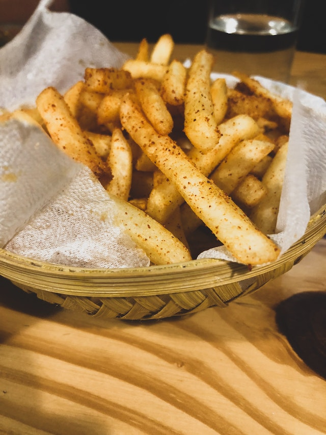

French fries is an iconic easy snack to make on your own. Perfect for movie times.
Ingredients:
- Cut the potato into a rectangular shape.
- Grab a pot and add a generous amount of oil into the pot. Let them warm up for few minutes until the oil is starting to bubble up.
- Put the cut-up potato into the pot and stir it slowly for a bit.
- Let them fry until the potato forms a crispy, golden texture.
- Prepare a plate with tissue on it and transfer the fries into that plate.
- Let the oil soaked up from the fries before serving them.